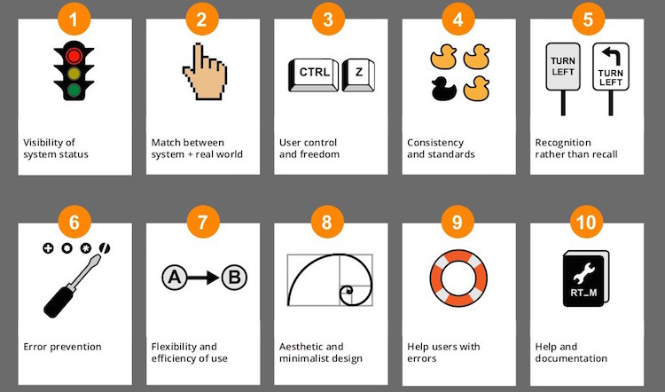

Cuáles son los 10 principios de usabilidad de Jakob Nielsen

- Visibilidad del estado del sistema
- Siempre debe mantener informado al usuario de lo que está ocurriendo
- Relacion entre el sistema y el mundo real
- El sitio web debe utilizar lenguaje del usuario, expresiones y palabras que le resulten familiares
- Control y libertad del usuario
- En caso de elegir una opción del sitio web por error, el usuario agradecerá disponer de una salida de emergencia
- Consistencia y estándares
- Establecer convenciones lógicas y mantenerlas siempre. El usuario no tiene por qué saber que diferentes palabras, acciones significan lo mismo
- Prevención de errores
- Ayuda a que el usuario no caiga en un error
- Reconocimiento antes que recuerdo
- Debemos hacer visibles acciones y opciones para que el usuario no tenga que recordar información entre distintas partes del sitio web
- Flexibilidad y eficiencia de uso
- Los aceleradores o atajos de teclado, por ejemplo, pueden hacer más rápida la interacción para usuarios expertos, de tal forma que el sitio web o aplicación sea útil tanto para usuarios básicos como avanzados.
- Estética y diseño minimalista
- Las páginas no deben contener información innecesaria. Cada información extra compite con la información relevante y disminuye su visibilidad.
- Ayuda a los usuarios a reconocer, diagnosticar y recuperarse de errores
- Los mensajes de error se deben entregar en un lenguaje claro y simple, indicando precisamente el problema y sugerir una solución constructiva al problema
- Ayuda y documentación
- La ayuda debe de ser fácil de localizar, especificar los pasos necesarios y no ser muy extensa